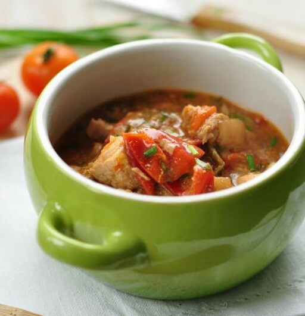

Ужин
Филе рыбы с овощами в горшочках
296.07 ккал 34.45 белки 8.24 жиры 17.74 углеводы
Ингредиенты
❶ Треска (170 гр.) ❷ Лук репчатый (35 гр.) ❸ Болгарский перец (115 гр.) ❹ Морковь (55 гр.) ❺ Помидор (115 гр.) ❻ Масло топленое (7 гр.)
Инструкция
1. Рыбное филе, предварительно размороженное, режем крупными кусками примерно одного размера, каждый кусочек посолить и поперчить по вкусу. 2. Подготавливаем овощи и другие ингредиенты. Ошпариваем лук и режем на мелкие кубики. Режем овощи: морковь на мелкой терке, а помидор и перец порезать крупными кубиками. Кладем овощи в любую емкость. Добавляем соль и специи по вкусу. 3. Ставим разогреваться духовку до 180 градусов. Перед приготовлением блюда «замочите» горшочек в холодной воде на 15 минут. Это нужно для того, чтобы вода закрыла поры в керамических стенках горшочка. Так сохраняется сок в блюдах – горшочек не станет его оттягивать на себя. 4. Кладем в горшочек немного овощей. На них - филе и сверху закрываем овощами, сверху кладем кусочек масла. Ставим в духовку на 40 минут при температуре 180 градусов. Чтобы все полностью пропеклось, лучше горшочки накрыть крышками или фольгой.